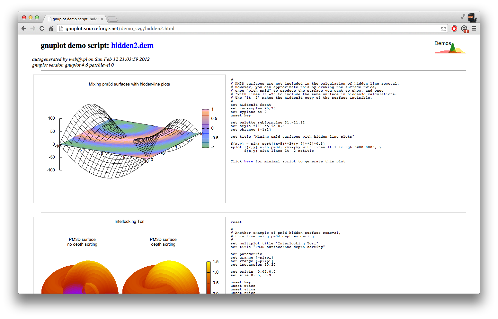

DZ
by victor powell
freelance data visualization
http://vctr.me
@vicapow
DZ
D3 + 3D
for projecting 3D data
D3 -> 2D
3D -> 2D
motivations
missed opportunity
visual encoding
under utilized bandwidth
born with ability to perceive 3 dimensions
but first...
a warning
with great power comes great responsibility
make sure you need it
often, you really don't
3D is hard
complex
(exponentially more complicated)
difficult to reason about the math
R ^ 1
R ^ 2
R ^ 3
good for...
geometric data
not categorical (usually)
existing tools
THREE.js
advantages
WebGL
disadvantages
WebGL
(no DOM)

advantages
export to SVG
disadvantages
not interactive
new language to learn
DZ
advantages
DOM
disadvantages
DOM
surface intersections
only supports perspective projections
slower than WebGL
quick demo
for comparison
the future
WebGL + D3
where's the DOM?
Data Driven SceneGraphs?
fin